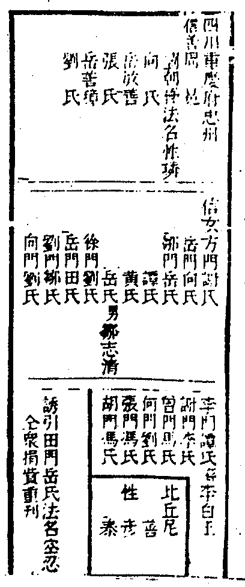

慶忠鐵壁機禪師語錄卷之十四
頌古(拈別評徵代)
舉溈山示眾云老僧百年後向山下作一頭水牯牛左脅書五字云溈山僧某甲此時若喚作溈山僧又是水牯牛喚作水牯牛又是溈山僧且道喚作甚麼即得仰山出禮拜而去。
舉溈山因摘茶次謂仰山云終日摘茶只聞子聲不見子形仰撼茶樹一下溈云子只得其用不得其體仰云未審和尚如何溈良久仰云和尚只得其體不得其用溈云放子二十棒。
舉溈山泥壁次李軍容來具公裳直至師背後端簡而立山回首見便側泥盤作接勢軍容便轉笏作進泥勢山拋下泥盤與軍容歸方丈。
拈云溈山側盤泥壁以身先之軍容公裳端簡拜下禮也只不獲承虛接響播弄泥團且道歸方丈後又作麼生。
拈云者小釋迦纔被溈山問著便手腳不穩且無些子遜讓氣息何故如此評論不見道路見不平傍人剷削。
頌遠望寒山石徑斜白雲深處有人家停車坐看楓林晚霜葉紅於二月花。
舉仰山寂禪師臥次僧問法身還解說法也無山云我說不得別有人說得僧云說底人在甚處山乃推枕子出。
拈云是僧問夢仰山答夢要且無說法人在。
頌綠蘿岩畔把心灰月挂松稍樹影來睡起蒲團鴉報曉柴門只有野猿開。
舉仰山常夢彌勒內院居第二座有一尊者白椎云今日當第二座說法師乃起白椎云摩訶衍法離四句絕百非諦聽諦聽。
舉仰山九十六種圓相(共一百零一相除去重出五相九十六種正)。
總頌一箇圓時箇箇圓胡餅饅頭總一般一種多種商量也有甚南陽與仰山。
舉仰山臨終付法偈云一二二三子平目復仰視兩口無一舌此是吾宗旨。
頌作家宗師示人剋的剖腹剜心臨行一句咄。
舉德山宣鑑禪師小參示眾云今夜不答話有問話者三十棒時有僧禮拜山便打僧云某甲話也未問為甚打某甲山云你是甚處人僧云新羅人山云未跨船舷好與三十棒。
舉德山到溈山挾拂子直上法堂從西過東從東過西顧視方丈偶溈山坐次殊不顧盼山乃云無無便出至門首卻云也不得草草重具威儀再入相見纔跨門便提起坐具云和尚溈山擬取拂子山便喝拂袖而出溈山至晚問首座今日新到在甚麼座云當時背卻法堂著草鞋去也溈山云還識此人麼座云不識溈山云此箇阿師已後向孤峰頂上盤結草庵呵佛罵祖去在。
頌心不負人面無慚色一箇白拈一箇老賊無端露出贓私許他結草罵得呵呵。
舉德山垂示云我先祖見處即不然者裏無佛無祖達磨是老古錐釋迦是乾屎橛文殊普賢是擔屎漢等覺妙覺是破執凡夫菩提涅槃是繫驢橛十二分教是神鬼簿是拭瘡疣紙四果三賢初心十地是守古塚鬼自救不了。
拈云阿那箇是你先祖得恁麼小知小見。
舉德山上堂大眾及盡去也直得三世諸佛口挂壁上猶有一人呵呵大笑若識此人參學事畢。
拈云山鬼之伎倆有盡我之不見不聞無窮。
舉德山凡見僧入門便棒。
拈云爭不足讓有餘。
頌一條楖栗活如龍隱顯躍潛雷雨風堪笑時師根眼鈍漫隨清水覓形蹤。
舉德山因守廓侍者問從上諸聖向甚麼處去山曰作麼作麼曰敕點飛龍馬跛鱉出頭來山休去明日山浴出廓過茶與山山撫廓背曰昨日公案作麼生曰者老漢今日方始瞥地山又休去。
舉毘婆尸佛尸棄佛毘舍浮佛拘留孫佛拘那含牟尼佛迦葉佛釋迦牟尼佛。
拈云古佛今佛過去佛現在佛未來佛恒沙佛無數佛元來是人作底良久云忙忙迫迫多少世幾箇足跟踏得齊。
頌佛有佛無佛古今佛來佛去佛無心無得無心云是佛趙州猶自不喜聞。
舉世尊纔出母胎一手指天一手指地。
拈云理直自然氣壯心真必定言麤須是老雲門始得何以故若無舉鼎拔山力千里烏騅不易騎。
頌指地指天乾打鬨周行七步亂生涯直饒沒箇旁人覷弄盡虛頭豈作家。
拈云是則是瞞我慶忠不得。
頌不為東風展笑顏機含此日露天斑靈雲豈是花驚眼只喜枝頭帶月圜。
舉世尊一日至多子塔前命摩訶迦葉分座令坐以僧伽黎圍之遂告云吾有正法眼藏密付於汝汝當護持傳付將來無令斷絕。
徵云明人不做暗事。
頌教外別傳傳箇甚麼甚麼傳已名曰密付。
舉世尊陞座文殊白椎世尊便下座。
頌打睡閉門已不堪擬陞曲彔好羞慚一椎怪殺文殊白依舊回頭鼻孔酸。
舉世尊敕文殊罔明令女子出定公案。
舉世尊在尼拘律樹下坐次因二商人問世尊還見車過不世尊云不見商人云還聞不世尊云不聞商人云莫禪定不世尊云不禪定商人云莫睡眠不世尊云不睡眠商人乃歎言善哉善哉世尊覺而不見遂獻白疊兩端。
頌無求到處人情好不飲從他酒價高莫謂如來營小利兩端白疊是龜毛。
舉世尊因波斯匿王問勝義諦中有世俗諦否若言無智不應二若言有智不應一一二之義其義云何佛言大王汝於過去龍光佛法中曾問此義我今無說汝今無聞無說無聞是名一義二義。
拈云問處孤高答處奇。
頌可羨冷謙協律教人鑿壁穿瓦天子呼來勘問分明向道瀟洒不是破瓶花八裂那知處處音聲者。
舉世尊因見文殊在門外立乃喚云文殊文殊何不入門來文殊云我不見一法在門外何以教我入門。
舉世尊因乾達婆王獻樂其時山河大地盡作琴聲迦葉起作舞王問迦葉豈不是阿羅漢諸漏已盡何更有餘習佛云實無餘習莫謗法也王又撫琴三遍迦葉亦三度作舞王云迦葉作舞豈不是佛云實不曾作舞王云世尊何得妄語佛云不是妄語汝撫琴山河大地木石盡作琴聲豈不是王云是佛云迦葉亦復如是所以實不曾作舞王乃信受。
頌蟬音不斷夕陽暉流水高山豈易知一句無私千古韻從來此曲和人稀。
舉世尊因外道問昨日說何法世尊云定法外道云今日說何法世尊云不定法外道云昨日說定法今日何說不定法世尊云昨日定今日不定。
評云惑亂多少人。
舉世尊因普眼菩薩欲見普賢不能得見乃至三度入定遍觀三千大千世界覓普賢不能得見而來白佛佛云汝但於靜三昧中起一念便見普賢普眼於是纔起一念便見普賢向空中乘六牙白象。
舉世尊因自恣日文殊三處過夏迦葉欲白椎擯出云拈椎乃見百千萬億文殊迦葉盡其神力椎不能舉世尊遂問迦葉汝擬擯那箇文殊迦葉無對。
舉世尊將諸聖眾往第六天說大集經敕他方此土人間天上一切獰惡鬼神悉皆集會受佛付囑擁護正法設有不赴者四天門王飛熱鐵輪追之令集既集會已無有不順佛敕者各發弘誓擁護正法唯有一魔王謂世尊云瞿曇我待一切眾生成佛盡眾生界空無有眾生名字我乃發菩提心。
徵云賊是小人智過君子然雖如是春秋責備賢者何以故魔來成佛易佛住遣魔難。
頌菩提心發界生空魔說巧於佛說同是佛是魔齊追擯鐵輪飛熱渾身紅。
舉世尊良久維摩默然。
拈云古今錯會者如麻似粟。
頌言有言無都不問岩巔萬丈逼瞿曇迷雲鞭影何須道千載須知有阿難。
舉世尊於靈山會上五百比丘得四禪定具五神通朱得法忍以宿命智通各各自見過去弒父弒母及諸重罪至文殊持劍逼佛云云。
頌從來子孝父心寬樂業榮家總亦然宅下不栽槐幾樹那能清白永相傳。
舉世尊因地布髮掩泥獻花於然燈佛燈見布髮處遂約退眾乃指地曰此處宜建梵剎時有賢于長者▆標插云建梵剎竟諸天散花讚云庶子有大智矣。
拈云修造不易。
舉世尊因七賢女遊屍陀林一女指屍謂諸姊曰屍在者裏人向甚麼處去云云。
評云聖姊善說法要世尊當面瞞人。
舉世尊因耆婆善別音響至一塚間見五髑髏乃敲一髑髏問云此生何處曰生人道又敲一云此生何處曰生天道又別敲一云此生何處耆婆罔知生處。
拈云何不問取敲者。
舉世尊因黑爪梵志運神力以左右手擎合歡梧花兩株供佛佛召梵志放下云云。
拈云家無小使不成君子。
舉世尊因調達謗佛生身入地獄遂令阿難傳問你在獄中安否達云雖在地獄如三禪天樂佛又令問還出獄否達云我待世尊來便出阿難云佛是三界大師豈有入地獄分達云佛既無入地獄分我豈有出地獄分。
評云心安茆屋穩性定菜根香。
舉世尊未離兜率已降王宮未出母胎度人已畢。
拈云此誰說的諸人還信得及麼。
舉世尊臨入涅槃文殊大士請再轉法輪世尊咄云文殊吾四十九年住世未曾說一字汝請再轉法輪是吾曾轉法輪耶。
頌臨老心孤不值錢辭乾推滑惹疑嫌誰知公道在人耳枉住世間七七年。
舉世尊坐次見二人舁豬過乃問是甚麼人云佛具一切智豬子也不識世尊云也須問過。
拈云探竿在手影草隨身。
頌非故作故無事討事渡得江來賓鴻迷去者回始信老瞿曇千古流傳成笑具。
舉德山一日飯遲托缽下堂時雪峰作飯頭見便云者老漢鐘未鳴鼓未響托缽向甚麼處去山便歸方丈峰舉似岩頭頭曰大小德山未會末後句云云。
頌不會末後句托缽歸丈去岩頭撫巴掌德山遭授記三年後如何喉中絕了氣。
舉德山因臨濟侍次山曰今日困濟曰者老漢寐語作麼山擬拈棒濟便掀倒禪床。
頌蚊蟲嘴利蜂蠆尾毒驀直撞頭各自一路咄咄。
舉雪峰義存禪師一日示眾曰南山有一條鱉鼻蛇汝等諸人切須好看時長慶出云今日堂中大有人喪身失命雲門以拄杖攛向師前作怕勢後僧舉似玄沙沙云須是稜兄始得然雖如是我即不然僧云和尚作麼生沙云用南山作麼。
舉雪峰一日因有兩僧來峰遂以手托庵門放身出云是甚麼僧亦云是甚麼峰低頭歸庵後僧辭去云云。
拈云同參相為徹骨徹髓乃千古龜鑑須信巖頭道雪峰與我同條生不與我同條死是真語者實語者。
拈云雪峰出怪玄沙捉怪要且無陞座集眾分。
舉雪峰因三聖問透網金鱗未審以何為食峰曰待汝出綱來向汝道聖曰一千五百人善知識話頭也不識峰曰老僧住持事繁。
頌狹道相逢未足奇渠方乘馬我乘驢到來一笑忘賓主去路茫茫總不知。
舉雲門偃禪師示眾云諸和尚子莫妄想天是天地是地山是山水是水僧是僧俗是俗良久云與我拈按山來時有僧問學人見山是山水是水時如何門云三門為甚騎佛殿從者裏過。
拈云雲門恁麼道正是妄想。
舉雲門示眾云你若不相當且覓箇入頭處微塵諸佛在你舌頭上三藏聖教在你腳跟底不如悟去好還有人悟得麼出來對眾道看。
頌舌頭諸佛一微塵聖教腳跟有幾人本自無迷何用悟雲門語話可憐生。
舉僧問雲門樹凋葉落時如何門云體露金風。
別云何不道黃花形晚色寒鴈送聲來。
舉僧問雲門如何是學人自己門曰遊山翫水曰如何是和尚自己門曰賴遇維那不在。
頌遊山翫水維那不在記得自己忘卻布袋。
頌雲門露字不沾牙吐出溫清體態嘉佛祖弒時無懺處滿盈惡貫坐龍華。
舉僧問雲門如何是正法眼門曰普。
別云烏龜開夜市。
舉僧問雲門如何是啐啄之機門日響。
舉雲門曰三家村裏賣卜東卜西卜忽然卜著也不定僧便問忽然卜著時如何門曰伏鷹。
頌卜著渾如攫兔鷹草枯眼疾熊忙生忽然得見喪身命噉啄摶飛距爪獰。
舉雲門上堂因聞鐘聲乃曰世界與麼闊為甚向鐘聲披七條僧無語門曰七里灘頭多蛤子。
頌少年公子真氣骨不誓驚人語出奇稱名豈謂浮雲賤特地知他是男兒。
舉雲門初參睦州州纔見來便閉卻門門乃扣門州曰誰門曰某甲州曰作甚麼門曰己事未明乞師指示州開門一見便閉卻門如是連三日扣門至第三日州開門門拶入州便擒住曰道道門擬議州便推出曰秦時[車*度]轢鑽遂掩門損門一足從此悟入州指見雪峰云云。
頌獅子窟邊沒異跡就中穿鑿枉徒然搖風修竹依稀似不是無言即有言。
舉雲門到江州陳操尚書請齋纔見便問儒書中即不問三乘十二分教自有座主作麼生是衲僧行腳事門曰曾問幾人來曰即今問上座門曰即今且置作麼生是教意曰黃卷赤軸門曰者箇是文字語言作麼生是教意曰口欲談而辭喪心欲緣而慮忘門曰口欲談而辭喪為對有言心欲緣而慮忘為對妄想作麼生是教意書無語門曰見說尚書看法華經是否曰是門曰經中道一切治生產業皆與實相不相違背且道非非想天有幾人退位書無語門曰尚書且莫草草三經五論師僧拋卻特入叢林十年二十年尚不奈何尚書又爭得會書禮拜曰某甲罪過。
▆云尚書不會當仁卻也有始有卒雲門其言不讓猶欠起死回生若到慶忠門下二俱未了。
舉雲門上堂拈起拄杖曰凡夫實謂之有二乘析謂之無緣覺謂之幻有菩薩當體即空衲僧家見拄杖便喚作拄杖行但行坐但坐不得動著。
拈云分得分明太特煞分明分得特煞人。
舉雲門上堂光不透脫有兩般病一切處不明面前有物是一又透得一切法空隱隱地似有箇物相似亦是光不透脫又法身亦有兩般病得到法身為法執不忘己見猶存坐在法身邊是一直饒透得法身去放過即不可子細檢點將來有甚麼氣息亦是病。
頌無明煩惱遠年瘵巴掌拳頭近日痾棒喝通身成藥病曾經看好幾人麼。
舉雲門示眾曰讀經千卷紙上語。
拈云雲門者話大似不奈冬瓜何捉住藤子扯。
頌大明大白大光天窗上卻來著力鑽門門有路堪遊戲穴紙待他也大難。
舉僧問雲門達磨面壁意旨如何門曰念七又僧問南泉泉曰天寒無被蓋。
別云何不道他是異鄉人。
舉僧問雲門如何是佛門曰乾屎橛。
頌鬱鬱[土*孛][土*孛]無人識踏著始知不抖擻分明擲下也大奇者回閃殺趙州狗。
舉僧問洞山聰如何是佛山曰麻三斤。
頌如何是佛麻三斤幾笑時人不解行途路蹉跎猶自可許多錯認定盤星。
舉僧問雲門如何是超佛越祖之談門曰胡餅。
頌飛羅麵香油和虛空小▆▆▆▆▆了便不饑只發渴超甚佛越甚祖喝一喝。
舉僧問雲門如何是透法身句門曰北斗裏藏身。
別云何不道藏身北斗裏。
舉僧問巴陵如何是提婆宗陵云銀碗裏盛雪如何是吹毛劍陵云珊瑚枝枝撐著月問祖意教意是同是別陵云雞寒上樹鴨寒下水雲門聞此語云他日老僧忌辰只舉此三語供養老僧足矣。
拈云死不盡底見解。
別云何不道一六不。
舉玄沙師備禪師因小參次聞燕子聲乃云深談實相善說法要便下座尋有僧請益云某甲不會沙云去無人信汝。
頌深談實相不知歸春月泥融燕子飛王謝堂前人未信呢喃林下叫依依。
舉玄沙初到莆田縣百戲迎之次日問小塘長老昨日許多喧鬧向甚麼處去小塘提起袈裟角沙曰料掉沒交涉。
頌料掉沒交涉提起袈裟角莆田百戲迎大家都是錯錯錯錯鬼面神頭五花六綠到者裏用不著。
舉玄沙示眾云諸方盡道接物利生忽遇三種病人來且作麼生接患盲者拈椎豎拂他又不見患聾者語言三昧他又不聞患啞者教伊說又說不得且作麼生接若接不得佛法無靈驗當時地藏出云某甲有眼耳和尚作麼生接沙云慚愧便歸方丈。
頌慚愧便歸方丈去盲聾瘖啞示生前有眼有耳有舌者目前休聽口頭禪。
舉玄沙見三人新到鳴打普請鼓三下卻歸方丈新到具威儀了亦去打普請鼓三下卻入僧堂久住來白沙云新到輕欺和尚沙曰打鼓集眾勘過大眾集新到不赴沙令侍者云喚新到出堂卻於侍者背上拍云云。
頌響板打起靜夜行應憐群夢未醒醒鐘報三聲鳴洗淨尚有齁鼾瞌睡人。
舉玄沙因雪峰召曰備頭陀何不遍參去沙曰達磨不來東土二祖不往西天峰然之。
頌參方不用苦遊行剖腹剜心以告君拂袖開胸伶俐子磨裙擦褲笨禪人。
舉玄沙示眾云世尊道吾有正法眼藏付囑摩訶大迦葉猶如畫月曹溪豎拂猶如指月時鼓山出眾云月聻沙云者箇阿師就我覓月山不肯卻歸眾云道我就他覓月。
頌月到疏窗點點金清光恒映照禪心禪心不為愛明月為愛禪心照月明。
舉地藏問僧甚麼處來曰南州來藏曰彼中近日佛法如何僧云商量浩浩地藏曰爭如我者裏種田博飯喫僧云爭奈三界何藏曰喚甚麼作三界。
頌種田博飯倦來眠浩浩商量大地間若與他咱爭箇賽我儂贏得一生閒。
舉法眼益禪師問修山主毫釐有差天地懸隔兄作麼生會主云毫釐有差天地懸隔眼曰與麼又爭得云云。
舉法眼有時指橙子曰識得橙子周匝有餘。
頌識得橙子無頭無尾黃狗不似白狗非比。
舉法眼問子方上座作麼生是萬象之中獨露身方遂舉拂子眼曰恁麼會又爭得云云。
頌紅塵堆裏同塵住有箇拳頭無處豎茆簷縫可戳虛空虛空不是我讎屋。
舉法眼因僧問如何是佛眼曰汝是慧超。
頌借婆帔子拜婆年相逢喜起斷金蘭布得春風滿天下都盧不費些子錢。
舉僧問法眼承教有言從無住本立一切法如何是無住本眼曰形興未質名起未名。
別云果老倒騎[車*度]轢鑽。
頌紹續箕裘不礙多燕山階下五登科逢人謾說吾家醜老子偷雞兒偷鵝。
頌打破鏡時處處明何須斷臂覓安心平常酬答無沾滯信口說來不動唇。
舉法眼問寶資長老古人道山河無隔礙光明處處透作麼生是處處透底光明資曰東畔打鑼聲。
頌聲聲響喨透雲霄穿碎髑髏放白毫試問誰家褦襶子鐵航泛海浪頭高。

慶忠鐵壁機禪師語錄卷之十四終